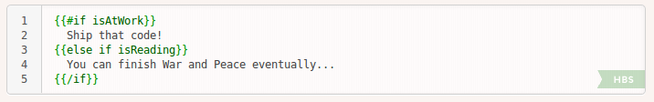
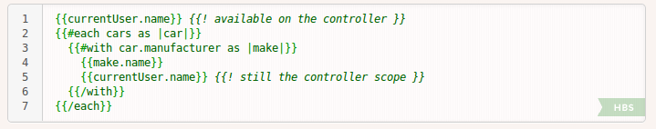
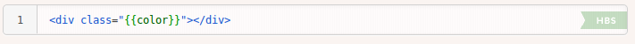
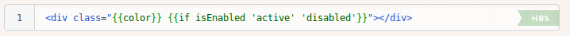
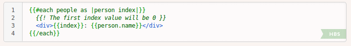
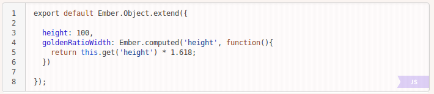

Welcome to meetup #7!

Sponsors
- Hstry organization
- InSilicoDB venue and beer
What has changed in Ember world?
3 releases
- 1.10, 1.10.1
- 1.11, 1.11.1, 1.11.2, 1.11.3
- 1.12
Road to Ember 2.0
- Development is going extremely fast
- Sometimes feels hard to keep up
- Incremental changes instead of one big release that breaks everything
- IE8 is no longer supported
Add new syntax, remove old syntax
- Old syntax is first deprecated before being removed
- Deprecations are shown in the console and Ember Inspector
- List of deprecations: http://emberjs.com/deprecations/v1.x/
Performance, performance, performance
- HTMLBars
- Glimmer engine, inspired by Facebook's React.js
Ember 1.10 (Feb 7th)
HTMLBars replaced Handlebars
- Better performance
- Easier to write templates (see later)
{{else if}} in templates

Block parameters
Ember 1.11 (Mar 27th)
No more {{bind-attr}}


{{each}} with index

Performance improvements
Compared to 1.10, common list rendering scenarios have improved by about twenty percent and view instance creation is over twice as fast.
Ember 1.12 (May 13th)
New syntax for computed properties
Summary
- Ember.js is growing and changing extremely fast
- Performance was (finally) addressed
- Lot of attention to easy upgrade path